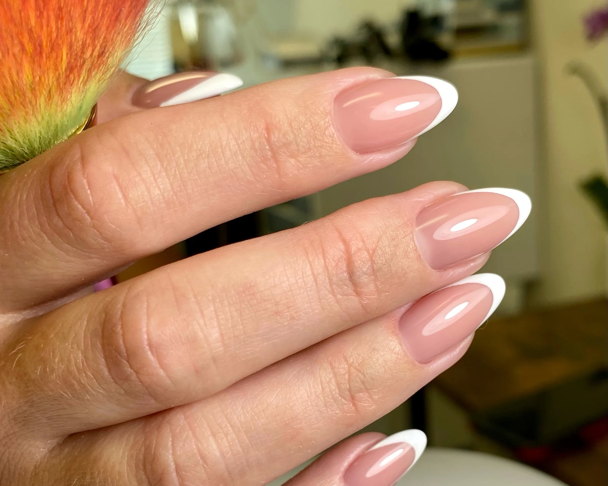
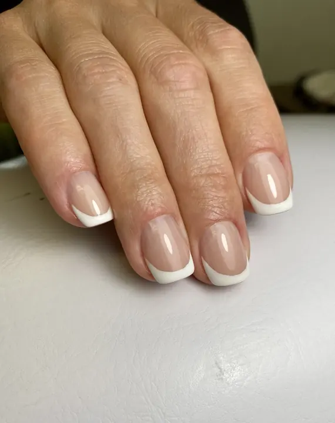
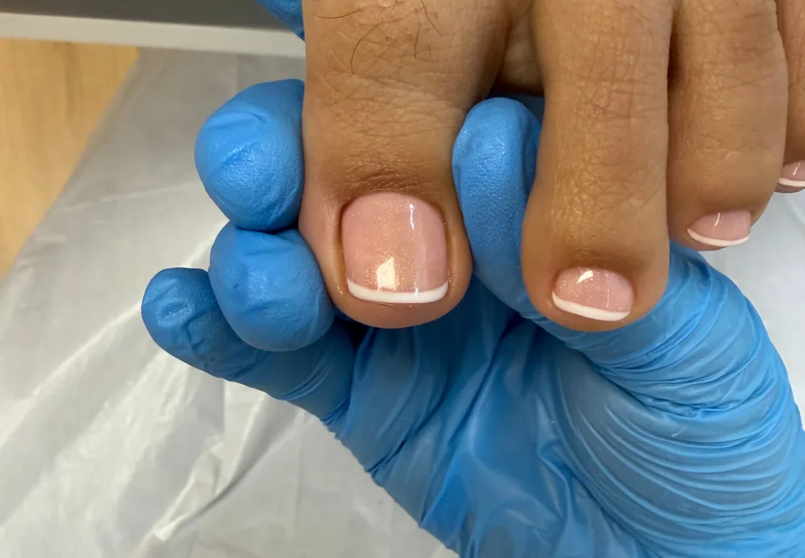
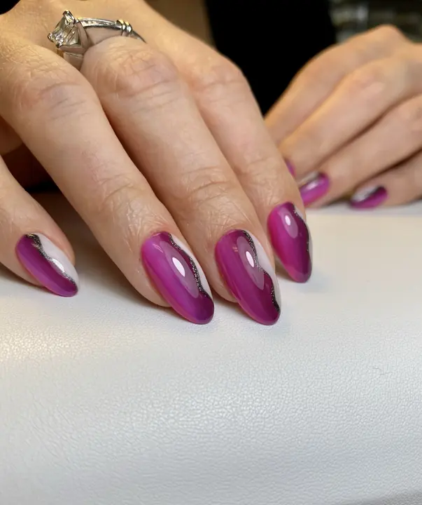
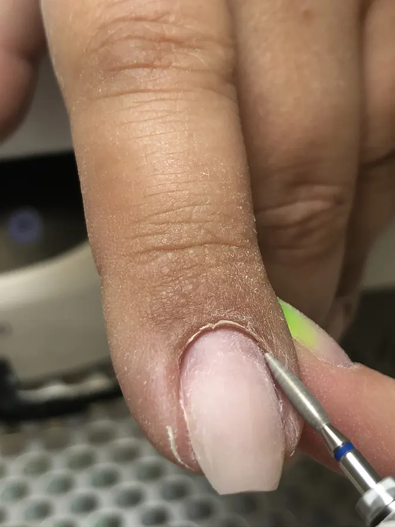
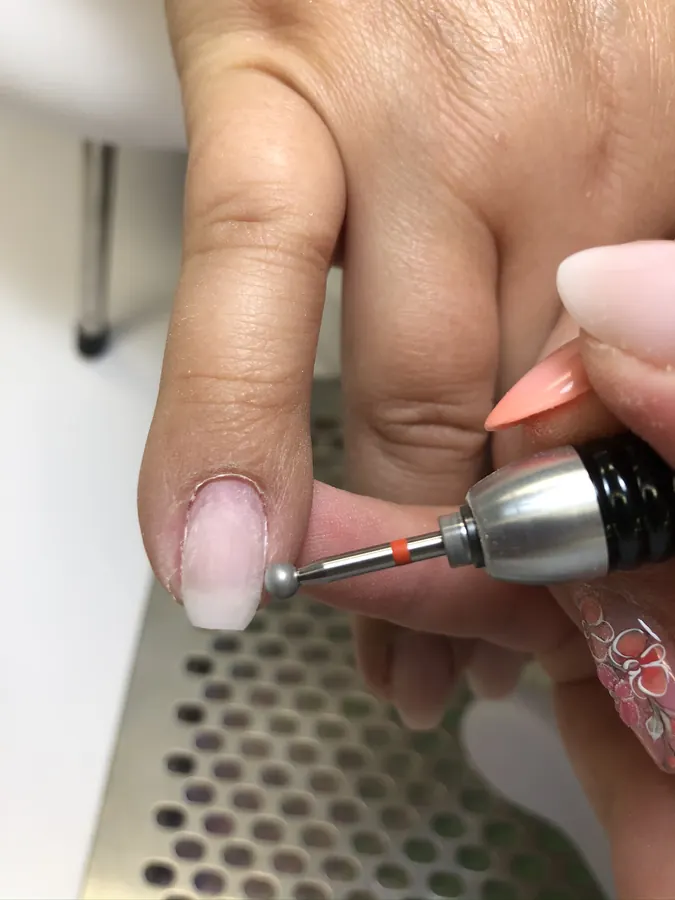
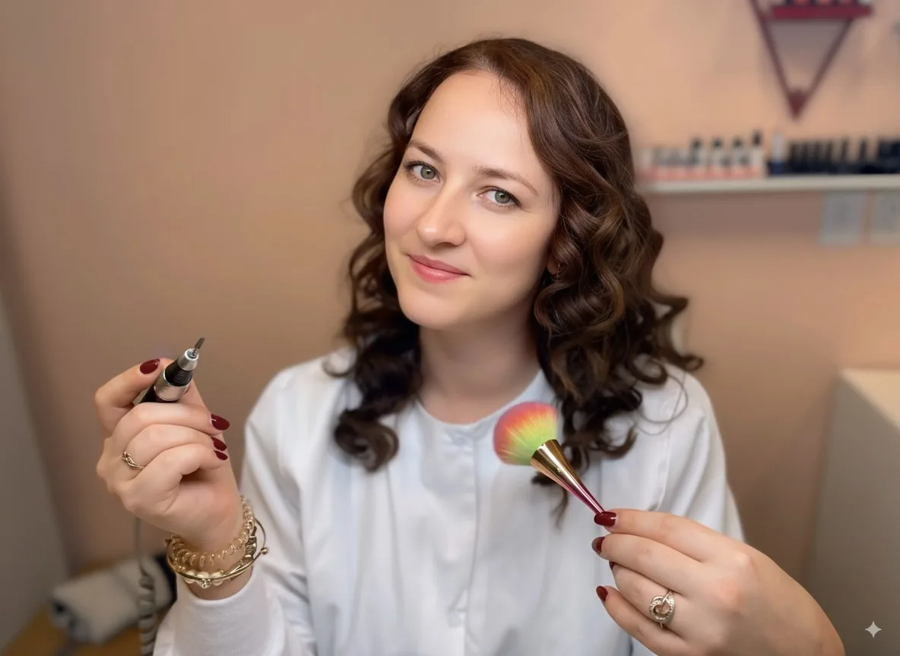

Precision technique
Dry (Russian) manicure and pedicure methods with an e-file and fine tools, for a clean nail fold and polish applied right to the cuticle line.

Expert Russian-technique nail care by Olga Glavatcaia.
Precise cuticle work, healthy natural nails and long-lasting results.
From a clean, polish-free hygienic manicure to sculpted hard gel extensions. Full menu and prices are available on the Services page.

Shaping, meticulous cuticle care and hand massage, with or without gel polish and strengthening.

Hygienic and advanced pedicures for dry, cracked skin and keratoses, with an optional gel finish.

Durable, smooth gel fills and elegant extensions in short, medium or long lengths.
Olga’s appointments are built around attention to detail: careful preparation, clean cuticle work and a finish that respects the health of your natural nail.
Dry (Russian) manicure and pedicure methods with an e-file and fine tools, for a clean nail fold and polish applied right to the cuticle line.
Strengthening options to reduce breakage and support growth. Gel is applied only when the natural nail is healthy and suitable.
One client at a time, with time to talk through shape, length and colour so the result feels like you.


Instead of softening the skin in water, dead cuticle is lifted and removed with fine tools and an e-file. The nail keeps its true shape, so polish sits neatly and lasts longer.
A specialized pedicure for thick toenails, dry and cracked heels, calluses and corns, early ingrown toenails and difficult-to-trim nails. For men and women.
A few favourites from the studio. See the full gallery for manicures, gel extensions and nail art.

Olga began her career in 2017 and spent eight years building her expertise and caring for clients in Washington State before bringing her experience to Charlotte.
Clients know her for precision, ongoing education and genuine warmth. Every appointment is calm, careful and tailored to you.
Pick your service and see live availability on Vagaro. You’ll get a confirmation with everything you need.
A dry manicure is done without soaking the hands in water. Instead, Olga uses a precision e-file and fine tools to gently lift and remove dead cuticle tissue and refine the nail fold.
Because the nail isn’t swollen with water, polish is applied to the nail’s true shape, which helps it sit closer to the cuticle and look neater for longer.
You’re paying for time, advanced training and meticulous technique, not a quick turnover. The goal is healthy nails and a result that holds up between visits.
Yes. There’s a dedicated Hygienic Manicure for Men and Hygienic Pedicure for Men: clean shaping, cuticle care and massage, with no polish.
That’s what the Advanced Pedicure is for. It addresses keratoses, cracks and excessive dryness, and can be combined with gel polish when the natural nail is suitable.
Nail health comes first. Gel polish is applied only when the natural nail plate is healthy and suitable. If it isn’t, Olga will suggest a strengthening option or a hygienic service instead.